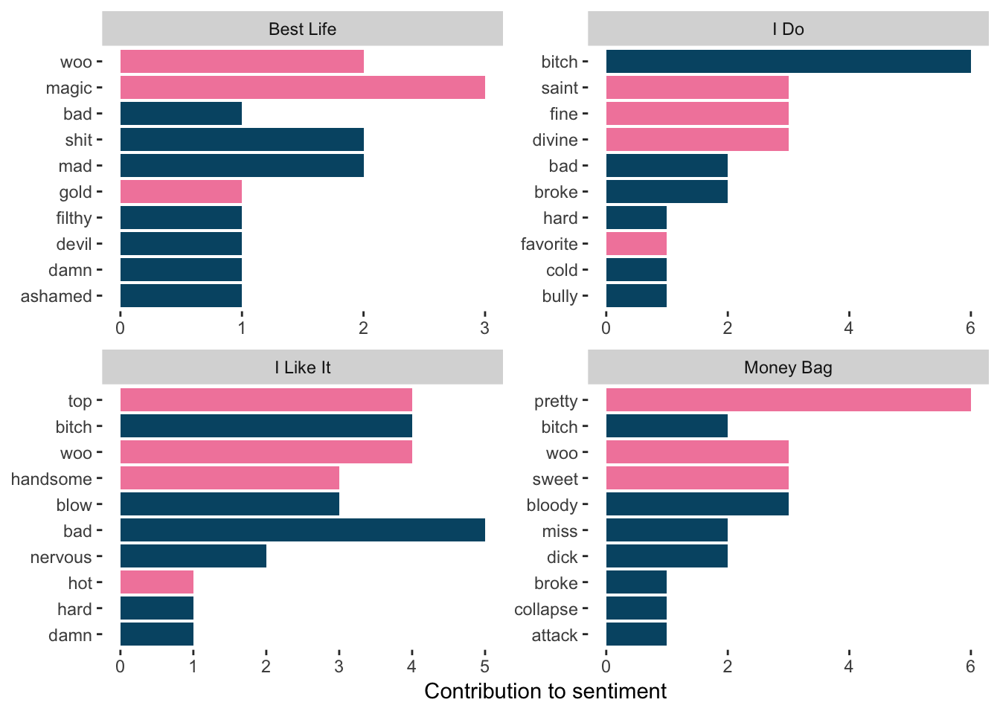

This work was inspired by Julia Silge and of course Cardi B. Julia Silge recently came to Duke and gave a #RLadies#tidytext workshop, before this I have actively avoided the tidy principles because I was stuck in my old ways.
But you wanna know something, it has been really fun learning the tidy principles and exceptionally easy to follow.
Keys to being tidy
First thing’s first, %>% is the pipe operator. At first, looking at “tidy” code with the pipe operator can make R look like a whole other programming language. But once I understood that it was just piping through each step one line at a time, things started to clear up.
Comment your code!!!
“I comment my code as if at any moment I might get a traumatic brain injury”@dataandme at #rstatsnyc
For more information, please visit the tidyverse website, I am a newbie to this.
#ldf is a list of dataframes and each dataframe represents a song on the album
ldf<-mapply(`[<-`, ldf, 'Title', value = titles, SIMPLIFY = FALSE) #add a title column in each dataframe in list
ldf<-lapply(names(ldf), function(x) tibble::rowid_to_column(ldf[[x]], "line")) #add line number column
#-put all songs in one datafame
full_album <- bind_rows(ldf)
colnames(full_album)[2] <- "text"
#-tidy it!
tidy_album <- full_album %>%
unnest_tokens(word, text)
Sentiment analysis
What kinda vibe is Cardi B’s album Invasion of Privacy giving off?
Here I used bing sentiments which classify if a word is positive or negative.
Using this classification, I looked to see what percent of each song was positive or negative. This analysis shows that Best Life, I Like It , Money Bag, I Do are the top positive songs. I will have to agree that Best Life and I like It are overall positive, and Best Life features Chance The Rapper, my all-time favorite artist, so it will always hold a special place in my heart.
album_sentiment<-tidy_album %>%
anti_join(stop_words) %>%
inner_join(get_sentiments("bing")) %>% # getting the subset of words that are in the bing sentiment and in the album
count(Title, word, sentiment, sort = TRUE) %>% # counting the number of positive and negative sentiments in each song
group_by(Title) %>%
mutate(proc = (n/sum(n) * 100)) %>% #calcalating percent of positive and negative sentiments
ungroup
I was curious to see what words from those songs made it “positive”.
album_pos<-album_sentiment %>%
filter(Title %in% c("I Like It", "Best Life", "Money Bag", "I Do")) %>% #subsetting the four songs
group_by(Title) %>%
filter(row_number() <= 10) %>% #get top 10 sentiments for each song
ungroup()

Let’s just take a moment to appreciate that “woo” is a positive word! Otherwise, I would think a better sentiment data set would better serve these songs, one specific to hip-hop music.
tf-idf analysis
Soooo you haven’t listened to the album yet…I will try and summarize each song
term frequency (tf) and inverse document frequency (idf) have been theorized to score words that best describe text \[ idf(term) = ln( \frac{n_{\text{documents}}}{n_{\text{douments containing term}}})\]
tf-idf is about comparing text within a collection, finds word that are most important in each document in a collection
So let’s see if this reigns true for the songs in the album. Naturally, the words that are most important to each song is the chorus which typically defines the song.
album_tf_idf<-tidy_album %>%
count(Title, word, sort = TRUE) %>% #count the words
bind_tf_idf(word, Title, n) %>% #calculate tf_idf score
arrange(desc(tf_idf)) %>% #sort by tf_idf
group_by(Title) %>%
filter(row_number() <= 10) %>% #get the top 10 tf_idf for each song
ungroup
If I took the words of the highest tf-idf score for each song, I wouldn’t be able to recapitulate what the song was about. Perhaps, calculating the tf-idf scores on n grams would better characterize what the song was about.
Analyzing n-grams
Here are the top trigrams for each song.
trigram_album<-full_album %>%
unnest_tokens(trigram, text, token = "ngrams", n=3) %>%
separate(trigram, c("word1", "word2", "word3"), sep = " " ) %>% #separate words
filter( !word1 %in% c("verse", "chorus", "intro"), # filter out "verse", "chorus", and "intro"
!word2 %in% c("verse", "chorus", "intro"),
!word3 %in% c("verse", "chorus", "intro")) %>%
unite(trigram, word1, word2, word3, sep = " ") %>% # join words
count(Title, trigram) %>% # counting the trigrams
bind_tf_idf(trigram, Title, n) %>% # calculate tf_idf for the trigrams
arrange(desc(tf_idf)) %>% # sort by tf_idf
group_by(Title) %>%
filter(row_number() <= 10) %>% #get the top 10 for each song
ungroup
I definitely think as n increases, it is easier to get a picture of what each song is about. The top trigrams of Drip, Best Life, Get Up 10 characterizes its respective song well.
Cardi B Phrases
We all know Cardi B is known for her phrases, so I was curious to see what are some top phrases we can take from the album.
I can’t wait till I’m making money moves and make a couple m’s … I’m not sure if I will be buying red bottoms or a versace driveway but I’m definitely okay with ferrari fridays.
Summary
Using tidy principles definitely made my code look and feel more neat and debugging was a lot easier. I will be incorporating tidy principles more in my day to day work. As for text mining and analysis, this was my first jab at it and I had a lot of fun with this. I think a better sentiment dataset that is catered to Rap/Hip-Hop music would have made the sentiment analysis more accurate. Thank you for reading my first blog post…now back to #PhDLife.